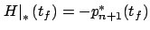

Next: 4.3.1.3 Terminal cost
Up: 4.3.1 Changes of variables
Previous: 4.3.1.1 Fixed terminal time
Contents
Index
4.3.1.2 Time-dependent system and cost
The same idea of appending the state variable  and
passing to the system (4.39) can be applied when the
original system's right-hand side
and
passing to the system (4.39) can be applied when the
original system's right-hand side  and/or the running cost
and/or the running cost  depend on
depend on  . The Hamiltonian is now time-dependent:
. The Hamiltonian is now time-dependent:
 |
(4.40) |
The previous
discussion remains valid up to and including the equation
 but the latter no longer equals 0. Thus,
but the latter no longer equals 0. Thus,  and
and
 are not constant any more. Instead, we have the differential
equation
are not constant any more. Instead, we have the differential
equation
with the boundary
condition

. If the terminal
time  in the original problem is free, then the final value
of
in the original problem is free, then the final value
of  is free and the transversality condition yields
is free and the transversality condition yields
 . In this case we obtain
. In this case we obtain
 and,
integrating (4.41),
and,
integrating (4.41),
 Note
that (4.41) is consistent with the equation
obtained in (3.43) in the context of the
variational approach (although the middle portion
of (3.43) does not apply here).
Note
that (4.41) is consistent with the equation
obtained in (3.43) in the context of the
variational approach (although the middle portion
of (3.43) does not apply here).
The same conclusion can be reached by following the proof of the maximum principle
and verifying that it carries over to the time-varying scenario
without major changes, except that the claim of
Exercise 4.6 becomes invalid and
only (4.41) can be established. We can
appreciate, however, that in the present case the method of
changing the variables is much simpler and more reliable.
Next: 4.3.1.3 Terminal cost
Up: 4.3.1 Changes of variables
Previous: 4.3.1.1 Fixed terminal time
Contents
Index
Daniel
2010-12-20